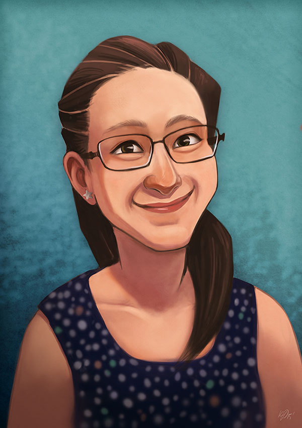

Self-Portrait, September 2015
My last profile picture was feeling a little outdated, so I figured it was time for a new self-portrait:

To create this self-portrait I used a mix of recent photos as reference. I sketched and digitally painted the full illustration in Photoshop, finishing with a few paint textures from Texture Mate.
After such a long break, it feels great to be getting back into art again.
Until next time!
x Kristy Kate